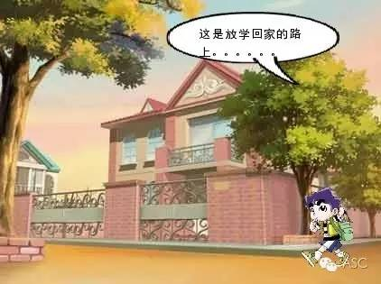
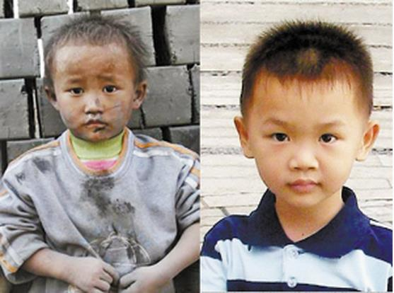
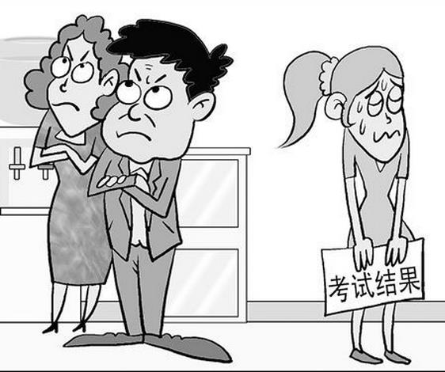
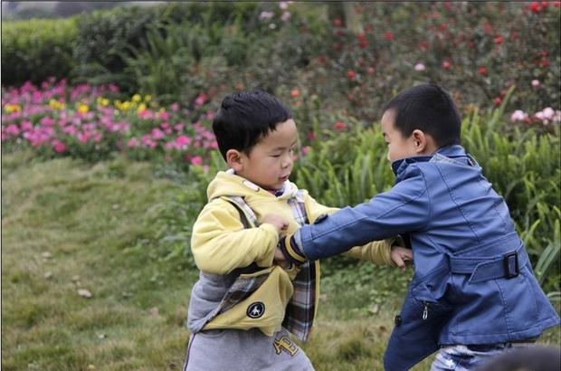
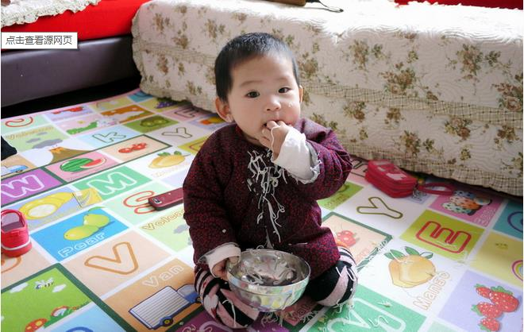

互惠动态
|
|
一个女儿痛恨妈妈的故事：惊醒千万父母...
成长中的孩子具有敏感的心灵，
赏识和鼓励尤为重要。
一句话、一个眼神、一个微笑，
父母生活中的每个细节都能给孩子传递欣赏的信号。
所以，亲爱的家长们，
对待孩子请别吝啬你的赞扬！
1、在家里墙上乱涂乱画。
外国小孩：这是绘画天赋的体现，值得鼓励。
咱小时候：一顿打。

2、放学家长来接的晚了，独自一人回家。
外国小孩：这是探索精神，值得鼓励。
咱小时候：一顿打。

3、玩的一身泥，很脏回家。
外国小孩：这是孩子的天性，值得鼓励。
咱小时候：一顿打。

4、考试成绩不理想。
外国小孩：人难免有失误的时候，值得鼓励。
咱小时候：一顿打。

5、在外和别的小朋友打架了。
外国小孩：这是孩子的天性，值得鼓励。
咱小时候：一顿打。

6、吃饭时掉的哪都是。
外国小孩：告诉他不要浪费，都捡起来吃了就好。
咱小时候：一顿打。
7、和父母意见不一致，发生争执时。
外国小孩：大家公平讨论，各抒己见。
咱小时候：一顿打。

关于互惠，您了解得够多么？
请外国学生来家庭照顾孩子，辅导孩子外语？
只了解这些是不够的！
获取更多信息请参考以下方式：
联系ASC：
电话：86-21-61116069(上海中心）
86-25-66065662（南京中心）
手机：15601666586（可加微信）
Q Q：3259637585
微信：asc-center
邮箱：info@asc-center.com
网站：www.asc-aupair.com

感谢您对我们的关注